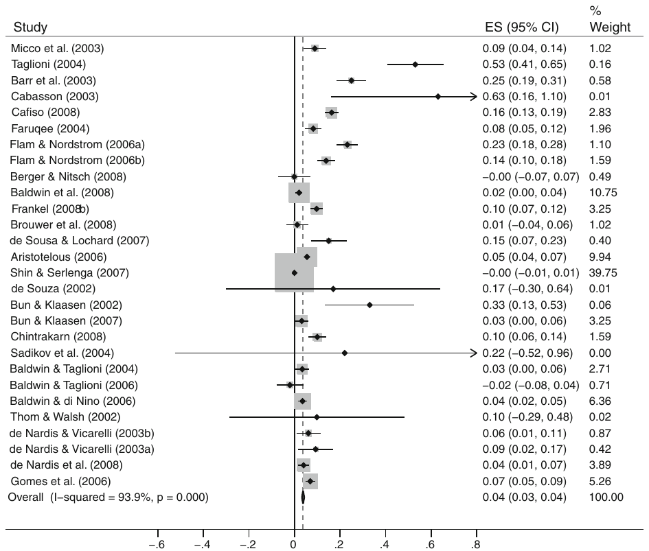
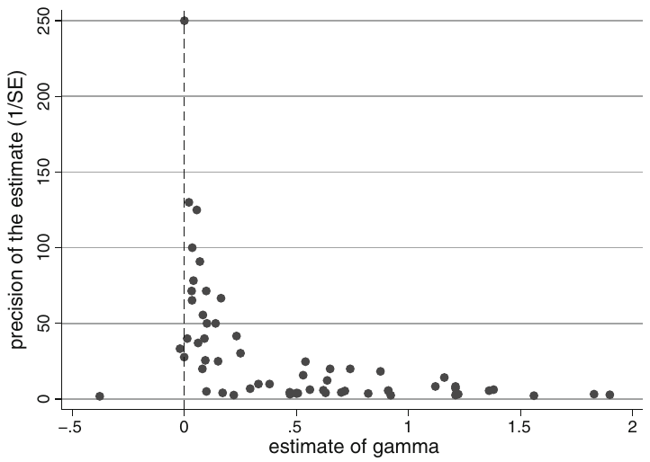
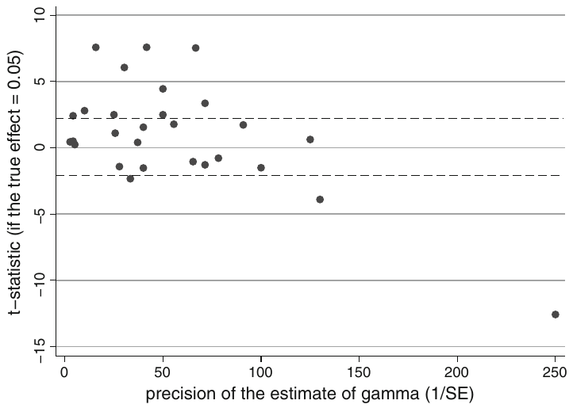
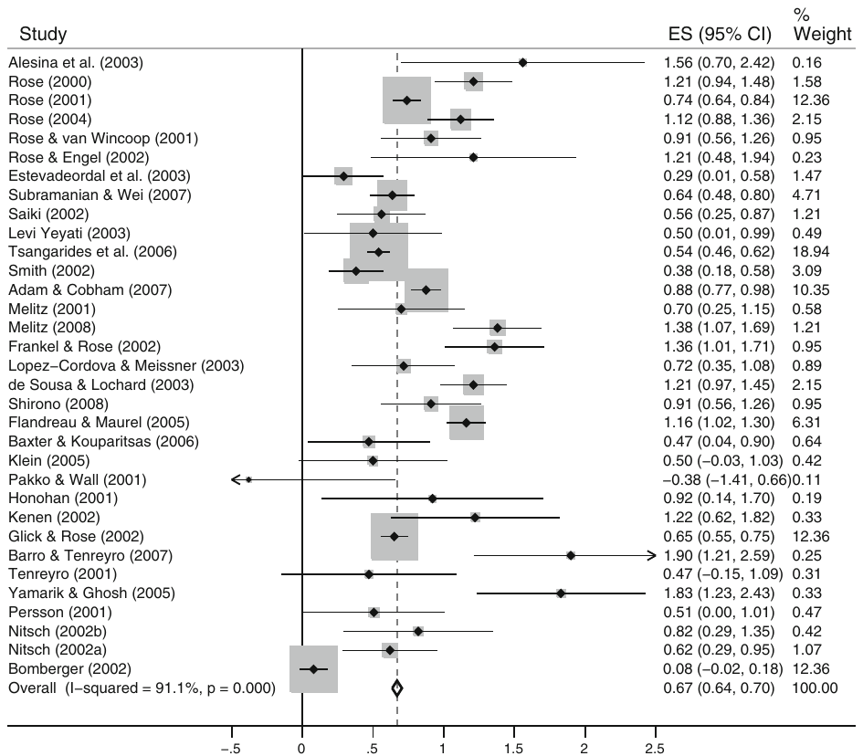

Rose Effect and the Euro: Is the Magic Gone?
Tomas Havranek (2010), "Rose Effect and the Euro: Is the Magic Gone?" Review of World Economics, 146(2), pp. 241-261. https://doi.org/10.1007/s10290-010-0050-1.
Tomáš Havránek
Economic Research and Financial Stability Department, Czech National Bank, Na Prikope 28, 115 03 Prague 1, Czech Republic
Institute of Economic Studies, Charles University in Prague, Opletalova 26, 110 00 Prague 1, Czech Republic
E-mail: tomas.havranek@ies-prague.org; t.havranek@gmail.com
Abstract
This paper presents an updated meta-analysis of the effect of currency unions on trade, focusing on the euro area. Using meta-regression methods such as the funnel asymmetry test, evidence for strong publication bias is found. The estimated underlying effect for currency unions other than the eurozone reaches more than 60%. However, according to the meta-regression analysis, the euro's trade promoting effect corrected for publication bias is insignificant. The Rose effect literature shows signs of the economics research cycle: reported -statistic is a quadratic concave function of the publication year. Explanatory meta-regression (robust fixed effects and random effects), that can explain about 70% of the heterogeneity in the literature, suggests that results published by some authors might consistently differ from the mainstream output and that study outcomes are systematically dependent on study design (usage of panel data, short- or long-run nature, number of countries in the data set).
Keywords: Rose effect, Trade, Currency union, Euro, Meta-analysis, Publication bias
JEL Classification C42 · F15 · F33
1. Introduction
Most of the Rose effect literature treats currency unions as magic wands—one touch and intra-currency-union trade flows rise between 5 and 1,400%. The only question is: How big is the magic? (Baldwin 2006, p. 36)
Since the pioneering work of Rose (2000) and his result that currency unions increase trade by more than 200%, a whole new stream of literature has emerged and thrived, focusing especially on the eurozone in recent years. How much does the euro boost trade among eurozone members? While some researchers are rather skeptical to search for ''the one number'' (e.g., Richard Baldwin, as the opening quotation suggests), others keep seeking: in a narrative literature review, Frankel (2008a) estimates the euro's Rose effect to lie between 10 and 15%. Even Baldwin (2006, p. 48) himself talks about 5–10% and expects the effect to double as the euro matures. This question is very attractive for welfare economists and policy makers: for instance, Frankel (2008b) uses his estimates to give Central and Eastern European countries advice on the timing of their admission to the eurozone; and Masson (2008), employing the result that ''currency unions double trade,'' asseses the welfare effects of creating a monetary union in Africa.
There has been one meta-analysis1 on this subject. Rose and Stanley (2005), using a combined sample of studies on both the eurozone and other currency unions, report the general underlying effect to lie between 30 and 90%. The purpose of this paper is to extend the aforementioned work by including new studies and different meta-analysis methods, which enables us to concentrate on the effects of the euro and other currency unions separately. It is shown that the distinction between euro and non-euro studies is important since both sub-samples tell a very different story. Twenty-seven new studies were added to the sample, 21 of which focuse on the eurozone. Together, there are 61 studies, 28 on the eurozone and 33 on other currency unions (see Table 4 in the Appendix). We examine publication bias among the literature (Card and Krueger 1995; Stanley 2005a), using the meta-regression approach (Stanley and Jarrell 1989; Stanley et al. 2008) and graphical methods (funnel plots, Galbraith plots); the ''true'' underlying effect is estimated as well. The meta-regression analysis (MRA) by Rose and Stanley (2005) is augmented with multiple different techniques (robust estimators, multilevel methods). Explanatory meta-regression methods, including robust meta-regression (see, for example, Bowland and Beghin 2001) and random effects meta-regression (Abreu et al. 2005), are used to examine systematic dependencies of results on study design and thus to model the heterogeneity present in the sample. Moreover, a test for the ''economics research cycle'' is conducted (novelty and fashion in economics research, see Goldfarb 1995).
The paper is structured as follows: in Sect. 2, the essence of meta-analysis is briefly described and the basic properties of the sample of literature are discussed. Section 3 focuses on publication selection and search for the true Rose effect beyond publication bias. In Sect. 4, the explanatory MRA is conducted. Section 5 concludes.
2. Combining the literature
Meta-analysis has its roots in psychology and epidemiology where it has been employed extensively in the last 3 decades (for a thorough introduction, see Borenstein et al. 2009). Originally, it was used to increase the number of observations and thus statistical power in those fields of medical research where experiments were extremely costly and scarce, or to estimate the ''true'' effect when the findings were seemingly mixed. Subsequently, this method spread to social sciences, including economics (beginning with Stanley and Jarrell 1989). The essence of meta-analysis is to use all available studies since even biased and misspecified results may carry useful information which can be decoded by the meta-regression approach. Omitting some empirical papers on the Rose effect ex ante, as Baldwin (2006) suggests in his narrative review, is thus, in our opinion, the opposite of what meta-analysts should do.
He [Richard Baldwin] thinks he knows which of the studies are good and which are bad [...], and wants only to count the good ones. The problem with this is that other authors have other opinions as to what is good and what is bad.'' (Frankel 2006, p. 83).
Fortunately, the meta-regression methods are able to cope with some degree of misspecification bias (Stanley 2008).
The ''Rosean'' stream of literature usually employs a variation of the following regression to estimate the trade effect of currency unions, the so-called gravity equation (for a detailed discussion and criticism, see Baldwin 2006):
where stands for the trade flow between two countries ( and ) in period , is a dummy which equals one if both countries are engaged in a currency union in period , denotes the real GDP, is the distance between the two countries, and denotes other control variables. The actual percent boost to trade due to the formation of a monetary union is thus given by .
The meta-analysis process starts with a selection of literature to be included in the analysis. Some meta-analyses use all point estimates (for instance, Abreu et al. 2005); sometimes it is advised to use only one estimate from each study since otherwise a single researcher could easily dominate the survey (Stanley 2001, 2005b; Krueger 2003). Moreover, most researchers report many different specifications starting with benchmarks. If all those estimates were included in the meta-analysis, the influence of benchmark cases would be highly exaggerated (however, this can be partly treated by multilevel data analysis or clustering). Researchers themselves also assign very different weights to the particular specifications. Therefore, while including all estimates would enhance degrees of freedom, we prefer selecting the representative specifications.2 The present paper builds on the data set provided by Rose and Stanley (2005) which covers a sample of results taken from 34 papers on currency unions' trade effect. The data set, however, contains only 7 studies on the eurozone, which does not make it possible to estimate the euro's effect separately. For this reason, an additional search was conducted mainly in the EconLit, RePEc, and Google Scholar databases, concentrating especially on new studies estimating the effect of the euro.3 All papers on the Rose effect containing a quantitative estimate of were included, both published and unpublished, extending the sample to the total of 61 studies, including 28 studies on the eurozone. The authors' preferred estimates were selected; in case there was no preference expressed, the model with the best fit was chosen. However, most authors in this sample reveal their preferences concerning the ''best'' estimate directly in the abstract or conclusion.
It is generally recognized that the reported Rose effect of the euro is significantly lower than that of other currency unions taken as a whole (Micco et al. 2003; Frankel 2008a). Frankel (2008a) tests three possible explanations (the euro's youth, the bigger size of eurozone economies compared to the average members of other monetary unions, and reverse causality for the earlier studies), but rejects them one by one. The low estimates of the euro's trade effect thus remain a puzzle. For policy recommendations concerning the euro, in any case, only the estimates derived from the eurozone studies should be taken into account. The results of the non-euro papers, however, are useful as well: on the one hand, these studies can serve as a control group; on the other hand, the ''true'' general Rose effect of other currency unions can be extracted from them.
The eurozone sample is depicted in Fig. 1; this type of figure is usually called ''forest plot'' in medical research. Black dots symbolize individual estimates of , horizontal lines show the respective 95% confidence intervals. The traditional method of combining estimates taken from various studies is the standard fixed effects estimator4 which weighs each observation according to its precision; i.e., inverse standard error. The weights constructed on the basis of the inverse-variance method are symbolized by squares with gray fill in the forest plot. The pooled effect estimated by fixed effects is plotted as a vertical dashed line, the solid vertical line symbolizes no effect. Using fixed effects, the pooled estimate of the euro's is very low: a mere 0.038 () with the 95% confidence interval CI = (3.36, 4.39%), although it is very significant (-stat. = 14.9). These results are not very useful for policy purposes, though, because—among other things starting with heterogeneity and high sensitivity to outliers—they do not account for likely publication selection; i.e., the preference of editors, referees, or researchers themselves for significant or non-negative results (more on this topic in Sect. 3).

The forest plot of the results of non-euro studies (Fig. 4 in the Appendix) shows a different picture. The pooled fixed effects estimate is far from zero, namely () with the 95% confidence interval CI = (88.89, 102.18%). Assuming that currency unions double trade, as, e.g., Masson (2008) does when he asseses the welfare effects of forming currency unions in Africa, thus might appear plausible in this respect.
Based on these simple statistics, there is no doubt that the estimates of the Rose effect of the euro and other currency unions are indeed immensely different and that it is not very appropriate to pool them together. However, more advanced methods are needed to assess the problem of publication selection and estimate the genuine underlying effect.
3. Publication bias and the true effect
In his thorough and influential review of the Rose effect literature, Richard Baldwin comments on the meta-analysis of Rose and Stanley (2005):
The meta-analysis statistical techniques are fascinating, but I don't believe it adds to our knowledge since deep down they are basically a weighted average of all point estimates. (Baldwin 2006, p. 36).
While this statement—or at least its last sentence—may apply to the very simple meta-analysis performed in Sect. 2, it disregards the most important part of Rose and Stanley (2005) as well as of the present study: the MRA, filtering out the publication bias, and modelling the heterogeneity (the search for ''the one number'' is not the only task of a meta-analyst).
In this section, the MRA is employed to test for publication bias and the true underlying Rose effect. Publication selection can take the following two forms (Stanley 2005a):
Type I bias: This form of publication bias occurs when editors, referees, or authors prefer a particular direction of results. Negative estimates of , for instance, might be disregarded; it would seem quite strange if the common currency hampered trade among the monetary union's members. The problem is that even if the true effect was positive, a certain percentage of studies (due to the nature of their data set, methods used, and the laws of probability) should report negative numbers. Otherwise, the average taken from the literature can highly exaggerate the estimated true effect. For instance, Stanley (2005a) shows how price elasticity of water demand is exaggerated fourfold due to publication bias.
Type II bias: The second type of bias arises when statistically significant results are preferred; i.e., when editors choose ''good stories'' for publication. In this way, many questionable effects may be ''discovered'' and further supported by subsequent research when other authors are trying to produce significant results as well. Intra-industry spillovers from inward foreign direct investment might serve as an example (Görg and Greenaway 2004).
The presence of type I publication bias is usually investigated employing the so-called funnel plot which shows the estimated effect against its precision (inverse of its standard error, Egger et al. 1997). The essence of this visual test is that, in the case of no bias, the shape of the cloud of observations should resemble an inverted funnel; observations with high precision should be concentrated closely to the true effect, while those with lower precision should be more dispersed. Above all, in the absence of type I publication bias, the funnel must be symmetric.
In Fig. 2, the funnel plot for all 61 studies is presented. It shows a perfect example of strong publication bias. While positive estimates clearly form one half of a funnel, the left half is almost completely missing as there are only four non-positive estimates. The eurozone and non-euro studies taken separately resemble an inverted funnel even less. This test can be formalized using a simple MRA (Ashenfelter et al. 1999):
where is the number of studies, denotes the true effect, and measures the magnitude of publication bias. However, regression (2) is evidently heteroskedastic. The measure of heteroskedasticity is the standard error of the estimate of , thus weighted least squares can be performed by running a simple OLS on equation (2) divided by the standard error:

The meta-response variable changes to the t-statistic corresponding to the estimate of taken from the i-th study. A simple t-test on the intercept of (3) is then a test for publication bias: the funnel asymmetry test (FAT). However, meta-analysis is more vulnerable to data contamination than other fields of empirical economics since it is necessary to choose representative estimates from the literature and collect all data manually. As a robustness check to the basic fixed effects meta-regression, we employ the iteratively re-weighted least squares method (IRLS) which moreover does not assume normality for hypothesis testing (Hamilton 2006, pp. 239–256). Robust methods in meta-analysis using IRLS are employed, e.g., by Bowland and Beghin (2001) or Krassoi-Peach and Stanley (2009). In the third specification, we allow for dependence between studies written by the same author; this multilevel approach follows Doucouliagos and Stanley (2009) and uses the restricted maximum likelihood method. In this case, the random intercept model (RIM, only intercept differs across authors) is preferred over the random coefficients model (RCM, both intercept and the coefficient for precision can differ) based on the likelihood ratio (LR) test: the corrected p-value of the test is 0.257 in favor of not rejecting the hypothesis that RIM is plausible.5
The results of all three tests in the case of the eurozone studies are summarized in Table 1. In all specifications, the intercept is highly significant (t-statistics vary from 2.37 to 4.04). Therefore, the hypothesis of no type I publication bias has to be strongly and robustly rejected, which is all the more remarkable given that these tests are usually believed to have relatively low power (Stanley 2005a). The fact that they all reject the null hypothesis at the 5% level of significance implies that publication bias presents, in our opinion, a serious problem for the literature on the euro's Rose effect.
| FAT-PET | ROBUST | RIM | |
|---|---|---|---|
| prec (effect) | 0.000667 (0.05) | 0.0265 (1.52) | 0.00899 (0.90) |
| Constant (bias) | 3.755 (4.04)*** | 2.451 (2.37)** | 3.517 (3.93)*** |
| Observations | 28 | 27 | 28 |
| RMSE | 3.169 | 3.141 |
Meta-response variable: tstat. t-statistics in parentheses (Huber–White heteroskedasticity-robust for FAT-PET). FAT-PET: Funnel assymetry test–precision effect test (fixed effects). ROBUST: Iteratively re-weighted least squares version of fixed effects. RIM: Random intercept model computed using restricted maximum likelihood. *** and ** denote significance at the level of 1 and 5%, respectively
Type II bias can be assessed using the Galbraith plot (Galbraith 1988) that depicts the precision of the estimates of against the t-statistics corresponding to those estimates and the (assumed) true effect. If the "true" effect was really true and there was no type II publication bias (selection of papers due to significant results), only about 5% of the studies' t-statistics should exceed 2 in absolute value and the cloud of observations should not form any systematic pattern. Figure 3 shows the Galbraith plot for the eurozone studies (Galbraith plots for all or non-euro studies yield similar results). If the true effect was 0.05, 13 studies out of 28 would report significant results. The goodness of fit test easily rejects the hypothesis of the expected distribution []; the null hypothesis is rejected even more powerfully when the true effect is considered to be equal to 0 or 0.1. The t-statistics also show an apparent tendency to decline with rising precision. Therefore, type II bias is clearly present among the eurozone studies.
All three methods of detecting type I bias (Table 1) can be also used to test for the significance of the true effect beyond publication bias [recall (2)]. Specifically, running a t-test on the slope coefficient of (3) is denoted as the precision effect test (PET). For eurozone studies, the corresponding t-statistic is only 0.05. When robust or random intercept versions of this test of effect are used, the result does not change significantly.6 This means that, employing the meta-regression methodology, there is not even a slight trace of any true underlying Rose effect of the euro beyond publication bias—compared to the 5–10% estimate by Baldwin (2006) and 10–15% estimate by Frankel (2008a). Using meta-regression analysis and the sample of available empirical studies, there is therefore no significant aggregate effect of the euro on trade.

An obvious objection to this approach arises: if the Rose effect of the euro is growing over time (Bun and Klaassen 2002; Baldwin 2006), it is questionable how one can pool together studies written in 2002, when the euro was still young, and papers published, for example, in 2008. It is a potential problem of any meta-analysis. However, as can be seen from Sect. 4, explanatory meta-regression does not find any significant relation between the results of eurozone studies and time. Also, for instance, Frankel (2008a) concludes that the euro's trade effect has stabilized after a few starting years.
Table 2 summarizes the tests of publication bias and the true effect for non-euro studies. Contrary to the previous case, the random coefficients model is preferred over the random intercept model (p-value of the LR test: 0.0009) and is reported in the table—this basically means that we allow publication bias and the effect to vary across researchers. It is apparent that publication bias is weaker than in the previous case; the intercept is significant according to the basic FAT, but not significant in RCM. However, as has been already mentioned, these tests of publication bias are known to have relatively low power. Therefore it seems that there is some evidence of publication bias among non-euro studies, although significantly weaker than among the eurozone studies. The difference between euro and non-euro studies is the most important finding in this respect—whereas papers on the eurozone are plagued by publication bias, the problem is much less serious for the rest of the literature.
| FAT-PET | PEESE | RCM | |
|---|---|---|---|
| prec (effect) | 0.534 (4.08)*** | 0.634 (9.83)*** | 0.583 (3.52)*** |
| SE (bias) | 3.567 (1.3) | ||
| Constant (bias) | 1.712 (2.21)** | 1.167 (1.33) | |
| Observations | 33 | 33 | 33 |
| RMSE | 3.234 | 3.320 |
Meta-response variable: tstat. t-statistics in parentheses (Huber–White heteroskedasticity-robust for FAT-PET and PEESE). FAT-PET: Funnel assymetry test–precision effect test (fixed effects). PEESE: Precision effect estimate with standard error. RCM: Random coefficients model computed using restricted maximum likelihood. *** and ** denote significance at the level of 1 and 5%, respectively
PET rejects the null hypothesis of no underlying effect of currency unions other than euro at the 1% level of significance. There is a caveat, though: Stanley (2005b) uses Monte Carlo simulations to show that PET is reliable only if . Otherwise, the estimate might be exaggerated by misspecification biases. In this case, is rejected []. For this reason, we should employ causion when interpreting the magnitude of the effect, even though the result of PET is supported by its robust version and the random coefficients model. When the "true effect" passes the test for effect, which is the case here, Stanley and Doucouliagos (2007) recommend employing the so-called precision effect estimate with standard error (PEESE) to estimate the magnitude of the effect in question. Contrary to the precision effect test, PEESE assumes that publication bias is related to the variance (not standard error) of the estimates of . The weighted least squares version thus yields:
PEESE estimates the true Rose effect of currency unions other than the eurozone to lie between 65 and 115% with 95% probability. The result is probably somehow exaggerated by misspecification biases, though. Therefore, we consider this number consistent with the previous meta-analysis by Rose and Stanley (2005) who estimate the effect to lie between 30 and 90% (Rose and Stanley, however, used also a few eurozone studies in their predominantly non-euro sample).
Figure 5 in the Appendix represents the funnel plot of all studies corrected for publication bias [using the filtered-effect test, details on which can be found in Stanley (2005a) or the working paper version of this article; observations with corrected are cut from the figure]. In contrast to Fig. 2, the present funnel plot is clearly symmetric—this is how the literature should look like.
4. Explanatory meta-regression
MRA can also be employed to determine possible dependencies of study results on its design. In fact, it has been the primary focus of most economic meta-analyses since the pioneering work of Stanley and Jarrell (1989). Economics research is usually much more heterogeneous than epidemiology and psychology, where the meta-analysis approach was originally developed. In this respect, MRA is used to assign a pattern to heterogeneity.
We gathered 18 meta-explanatory variables that reflect study design and social and other attributes of the authors (see Table 5 in the Appendix); 6 of the regressors are assumed to affect publication bias, the rest 12 are expected to influence the estimates of directly. The former include researchers' nationality, ranking, gender, panel nature of the data, and year of publication and its square. The latter cover dummies for specific authors, short or long run nature of the study, eurozone data, postwar data, number of countries and years in the data set, and the impact factor of the journal that the particular study was published in.
All meta-explanatory variables were chosen ex ante. We included the meta-explanatory variables used by Rose and Stanley (2005) and added some commonly used variables which are thought to influence publication selection (gender and nationality, for example; for a list of possible regressors affecting publication bias, see Stanley et al. 2008), as well as a few experimental regressors. For instance, the impact factor was included to ascertain whether articles published in leading journals produce significantly different results from unpublished papers. Inclusion of variable topfive (at least one co-author ranks among top 5% economists listed on RePEc) follows a similar logic.
Contrary to the previous sections, now the focus rests on the whole sample because more degrees of freedom are needed; heterogeneity is not so much problematic since it can be modeled to a large extent. There are 61 observations, which is enough for an explanatory meta-regression since sample size in meta-analysis is substantially more effective in increasing the power of hypothesis testing than sample size of original studies (Koetse et al. 2010). We employ the FAT-PET method augmented to the following multivariate version (Stanley et al. 2008):
where is a set of variables influencing publication bias and is a set of variables affecting the estimates of directly. We refer to this estimator as fixed effects, even though in the strict sense it is not the traditional fixed effects estimator used in meta-analysis: note that variables are not divided by the standard error.
Fixed effects estimates are summarized in column 1 of Table 3. As a robustness check, we employ the IRLS version of the model (column 2). The most insignificant meta-regressors are excluded one by one to get a model which contains only variables significant at least at the 10% level. After insignificant variables were excluded, the "economics research cycle hypothesis"7 was tested by adding the year of publication and its square value. The hypothesis corresponds to the joint significance of these variables and concave shape of the relationship. In this case, , and the relationship is indeed concave, hence the economics research cycle hypothesis is supported for this type of literature. This becomes even more apparent when IRLS are used [, ]. On the other hand, the research cycle hypothesis is rejected when each group of literature is considered separately: , for non-euro studies and , for the eurozone studies; there is therefore no apparent dependence on time (recall that we used the result that estimates of the euro's Rose effect do not significantly depend on time in Sect. 3). This might suggest that the research cycle identified in the whole literature emerges also due to a higher proportion of the eurozone papers among the new studies.
| FIXED | ROBUST | RANDOM | |
|---|---|---|---|
| prec | 0.780 (6.16)*** | 0.842 (8.15)*** | |
| panel | 1.606 (2.07)** | 1.864 (2.88)*** | 2.053 (4.67)*** |
| rose | 0.462 (3.45)*** | 0.328 (4.06)*** | 0.452 (3.62)*** |
| nitsch | −0.145 (−4.11)*** | ||
| baldwin | −0.0814 (−5.48)*** | −0.359 (−2.90)*** | |
| denardis | −0.0410 (−2.10)** | ||
| taglioni | 0.299 (2.42)** | ||
| euro | −0.700 (−5.99)*** | −0.779 (−8.39)*** | −0.563 (−5.53)*** |
| shortrun | 0.0349 (2.22)** | 0.0391 (2.61)** | |
| countries | −0.00241 (−3.21)*** | −0.00209 (−4.12)*** | −0.00108 (−1.74)* |
| impact | −0.0590 (−2.79)*** | −0.0413 (−2.33)** | |
| year | 1.178 (1.77)* | 1.822 (3.61)*** | 0.145 (2.07)** |
| year2 | −0.0801 (−1.08) | −0.183 (−3.32)*** | −0.0122 (−1.73)* |
| Constant | −1.497 (−1.15) | −2.964 (−2.71)*** | 0.278 (1.45) |
| Observations | 61 | 60 | 61 |
| 0.725 | 0.828 | ||
| 0.0316 |
Meta-response variable: tstat for FIXED and ROBUST, gamma for RANDOM. ROBUST: Iteratively re-weighted least squares version of FIXED. t-statistics in parentheses (Huber–White heteroskedasticity-robust for FIXED). Variables prec, rose, nitsch, baldwin, denardis, taglioni, euro, shortrun, countries, and impact are assumed to influence the estimates of directly. Variables panel, year, and year2 are assumed to influence publication bias. ***, **, and * denote significance at the level of 1, 5, and 10%, respectively
Regression described in column 1 of Table 3 is not very well specified, however. Condition number is high (75) indicating possible multicollinearity, Ramsey's RESET rejects the null hypothesis [, ], only normality is not rejected [skewness-kurtosis test: , ]; nevertheless, the model would pass all specification tests if variables panel, year, and year2 were excluded. It is apparent that fixed effects MRA was able to model a significant portion of the heterogeneity inside the sample—note the high s: 0.73 and 0.83 for fixed effects and their robust version, respectively.8 Nevertheless, a lot of heterogeneity still remains unexplained. Testing (fixed effects MRA explains heterogeneity
Rose effect and the euro 253
well) yields v2(60) = 276, p \ 0.001; for column 1, therefore, H0 is rejected—the result is qualitatively the same also for the robust specification.
When this is the case, random effects explanatory MRA might be preferable (see, e.g., Abreu et al. 2005):9 X J X K cbi ¼ i0 þ hj Sji SEi þ dk Zki þ ki þ qi ; ð6Þ j¼1 k¼1
where ki stands for a normal disturbance term with standard deviations assumed to be equal to SEi, and qi is a normal disturbance term with unknown variance s2 assumed equal across all studies. This between-study variance is estimated using the restricted maximum likelihood method; t-values are computed employing the Knapp and Hartung (2003) modification. The results of random effects MRA are summarized in the third column of Table 3; there are much less significant explanatory variables than in the previous two specifications.
It is clear from the conducted tests that explanatory meta-regression is as sensitive to method and specification changes as any other field of empirical research. The most important meta-explanatory variables are those that are found significant by all specifications in both fixed and random effects meta-regression (effect on bc is shown in parentheses): studies on the eurozone (-), Rose’s coauthorship (?), number of countries in the data set (-), and usage of panel data (?). Some other variables are significant using fixed effects explanatory MRA and its robust version at the same time: short-run nature of the study (?), Baldwin’s coauthorship (-), and impact factor (-).
The negative sign for studies on the eurozone was expected and is in accordance with the results reported by Rose and Stanley (2005), as well as the influence of the number of countries in the data set and usage of panel data. However, contrary to the previous meta-analysis, short-run studies are expected to report higher trade effects. Two dummies for authorship were found consistently significant. It does not mean, though, that those authors would produce anyhow tendentious results. Their results only seem to be significantly different from the ‘‘mainstream’’ output. According to the fixed effects meta-regression and its robust version, articles published in leading journals are likely to report marginally lower Rose effects. The latter finding is provocative but should be treated with caution since it is not confirmed by random effects meta-regression.
5. Conclusion
Empirical literature on the trade effect of currency unions is heterogeneous to a large extent. Studies estimating the trade effect of the euro find on average much smaller effects than articles concentrating on other currency unions. The present Monte Carlo experiments suggest that random effects MRA is preferable if heterogeneity is caused by non-constant effect size variance or differences in the true underlying effect across studies. However, when heterogeneity arises due to omitted variable bias—which is realistic in economics—fixed effects estimators should be relied upon (Koetse et al. 2010). For this reason, fixed effects MRA is interpreted here as well along with random effects.
254 T. Havránek
meta-analysis shows that it is more appropriate to consider these two groups separately in a search for the underlying ‘‘true’’ effect.
Evidence of publication selection—i.e., preference towards statistically significant and positively biased results—is robust among papers on eurozone and much stronger than for non-euro studies. Narrative literature reviews discussing the trade effect of the euro that do not take publication selection into account are hence vulnerable to a substantial upward bias. Meta-regression methods show that, beyond publication bias, there is a significant and huge Rose effect of the currency unions other than euro, more than 60%; but no effect at all for the euro area. The absence of an economically important true effect is so robust that even some possible mistakes in the process of choosing the authors’ preferred estimates cannot significantly change the outcome.
Employing explanatory meta-regression, we can model about 70% of the heterogeneity in the ‘‘Rosean’’ literature. The authorship of a particular study is important: papers co-authored by Rose tend to find higher effects, papers coauthored by Baldwin are more likely to report smaller estimates. Papers on the eurozone find significantly lower effects as well as do long-run studies and studies with a high number of cross-sectional units in their data sets. When panel data are used, the study tends to report higher effects. Once a study is published in a journal with a high impact factor, it is likely to find a rather smaller Rose effect; unpublished manuscripts are likely to report higher estimates. The Rose effect literature taken as a whole shows signs of the economics research cycle (Goldfarb 1995; Stanley et al. 2008): the reported t-statistic is a quadratic concave function of the publication year. One might take a note that the literature seems to have almost completed the circle and the results, especially on the eurozone, are getting close to those ‘‘before Rose’’ when exchange rate volatility was believed to have a low influence on international trade (McKenzie 1999).
The present author does not dare to argue that the euro would have no effect on trade. The effects may indeed vary from country to country and industry to industry, as Baldwin (2006) suggests. At the very least, however, there is something not entirely right with the present Rosean literature applied on the eurozone. The degree of publication bias is striking and the trade effect of the euro (at least based on available empirical studies) is probably much lower than we believed, even if ‘‘what we believed’’ was already twentyfold less than what Rose reported in his famous article.
Acknowledgments This work was supported by the IES Research Institutional Framework 2005–2010 (MSMT 0021620841). I thank Roman Horváth, Zuzana Iršová, Tom Stanley, Katerina Šmı́dková, and participants of the ETPM seminar at the Charles University in Prague for valuable comments. I am especially grateful to an anonymous referee of this journal for very useful suggestions that led to a substantial improvement in the quality and readability of the article. All remaining errors and omissions are mine. The views expressed are those of the author and do not necessarily reflect the views of the Czech National Bank.
Appendix
Tables 4, 5 and Figs. 4, 5
| Study | Euro | Gamma | t-stat. | Impact |
|---|---|---|---|---|
| Rose (2000) | No | 1.2100 | 8.643 | 1.281 |
| Pakko and Wall (2001) | No | −0.3780 | −0.715 | 0.536 |
| Rose and van Wincoop (2001) | No | 0.9100 | 5.056 | 2.239 |
| Rose (2001) | No | 0.7400 | 14.800 | 1.281 |
| Persson (2001) | No | 0.5060 | 1.969 | 1.281 |
| Honohan (2001) | No | 0.9210 | 2.303 | 1.281 |
| Mélitz (2001) | No | 0.7000 | 3.043 | 0.036 |
| Tenreyro (2001) | No | 0.4710 | 1.491 | 0.018 |
| Nitsch (2002b) | No | 0.8200 | 3.037 | 0.715 |
| Frankel and Rose (2002) | No | 1.3600 | 7.556 | 3.688 |
| Thom and Walsh (2002) | Yes | 0.0980 | 0.500 | 0.994 |
| Glick and Rose (2002) | No | 0.6500 | 13.000 | 0.994 |
| Rose and Engel (2002) | No | 1.2100 | 3.270 | 0.947 |
| Bun and Klaassen (2002) | Yes | 0.3300 | 3.300 | 0.018 |
| de Souza (2002) | Yes | 0.1700 | 0.708 | 0.018 |
| Nitsch (2002a) | No | 0.6200 | 3.647 | 0.018 |
| Smith (2002) | No | 0.3800 | 3.800 | 0.018 |
| Bomberger (2002) | No | 0.0800 | 1.600 | 0.018 |
| Saiki (2002) | No | 0.5600 | 3.500 | 0.018 |
| Kenen (2002) | No | 1.2219 | 4.006 | 0.018 |
| Levi Yeyati (2003) | No | 0.5000 | 2.000 | 0.302 |
| Estevadeordal et al. (2003) | No | 0.2930 | 2.021 | 3.688 |
| Barr et al. (2003) | Yes | 0.2500 | 7.576 | 1.281 |
| Lopéz-Córdova and Meissner (2003) | No | 0.7160 | 3.849 | 2.239 |
| Micco et al. (2003) | Yes | 0.0890 | 3.560 | 1.281 |
| de Nardis and Vicarelli (2003b) | Yes | 0.0610 | 2.262 | 0.018 |
| Cabasson (2003) | Yes | 0.6300 | 2.625 | 0.018 |
| Alesina et al. (2003) | No | 1.5600 | 3.545 | 0.036 |
| de Sousa and Lochard (2003) | No | 1.2100 | 10.083 | 0.018 |
| de Nardis and Vicarelli (2003a) | Yes | 0.0930 | 2.385 | 0.382 |
| Rose (2004) | No | 1.1200 | 9.333 | 2.239 |
| Sadikov et al. (2004) | Yes | 0.2200 | 0.579 | 0.036 |
| Faruqee (2004) | Yes | 0.0820 | 4.556 | 0.036 |
| Taglioni (2004) | Yes | 0.5300 | 8.370 | 0.018 |
| Baldwin and Taglioni (2004) | Yes | 0.0340 | 2.220 | 0.018 |
| Flandreau and Maurel (2005) | No | 1.1600 | 16.571 | 0.143 |
| Klein (2005) | No | 0.5000 | 1.852 | 0.709 |
| Yamarik and Ghosh (2005) | No | 1.8285 | 6.000 | 0.072 |
| Aristotelous (2006) | Yes | 0.0550 | 6.875 | 0.653 |
| Flam and Nordström (2006a) | Yes | 0.2320 | 9.667 | 0.036 |
| Baldwin and Taglioni (2006) | Yes | −0.0200 | −0.667 | 0.036 |
| Baldwin and di Nino (2006) | Yes | 0.0350 | 3.500 | 0.036 |
| Study | Euro | Gamma | t-stat. | Impact |
|---|---|---|---|---|
| Flam and Nordström (2006b) | Yes | 0.1390 | 6.950 | 0.018 |
| Gomes et al. (2006) | Yes | 0.0690 | 6.273 | 0.018 |
| Tsangarides et al. (2006) | No | 0.5400 | 13.370 | 0.036 |
| Baxter and Kouparitsas (2006) | No | 0.4700 | 2.136 | 0.036 |
| Barro and Tenreyro (2007) | No | 1.8990 | 5.410 | 0.535 |
| Subramanian and Wei (2007) | No | 0.6370 | 7.864 | 1.541 |
| Adam and Cobham (2007) | No | 0.8750 | 16.010 | 0.153 |
| Shin and Serlenga (2007) | Yes | −0.0003 | −0.075 | 1.094 |
| Bun and Klaassen (2007) | Yes | 0.0320 | 2.286 | 0.732 |
| de Sousa and Lochard (2007) | Yes | 0.1500 | 3.750 | 0.018 |
| Shirono (2008) | No | 0.9100 | 5.056 | 0.072 |
| Mélitz (2008) | No | 1.3800 | 8.625 | 0.994 |
| Berger and Nitsch (2008) | Yes | −0.0010 | −0.028 | 0.709 |
| Brouwer et al. (2008) | Yes | 0.0120 | 0.480 | 0.709 |
| Baldwin et al. (2008) | Yes | 0.0200 | 2.600 | 0.036 |
| Cafiso (2008) | Yes | 0.1630 | 10.867 | 0.036 |
| de Nardis et al. (2008) | Yes | 0.0400 | 3.130 | 0.072 |
| Frankel (2008a) | Yes | 0.0970 | 6.929 | 0.036 |
| Chintrakarn (2008) | Yes | 0.1000 | 5.000 | 0.072 |
Impact factor for the year 2007 obtained from ISI Web of Knowledge (see Table 5)
| Variable | Explanation |
|---|---|
| gamma | Point estimate of common currency's effect on trade |
| tstat | t-statistic corresponding to gamma |
| SE | Standard error of the estimates of gamma |
| prec | Inverse of SE |
| Moderator variables affecting publication bias | |
| woman | = 1 if there is a woman among co-authors, zero otherwise |
| usa | = 1 if all co-authors are Americans (based on current address) |
| topfive | = 1 if at least one co-author ranks among top 5% in at least 10 categories on RePEc |
| panel | = 1 if the study uses panel data with N > T |
| year | Publication year-2000. |
| year2 | Variable year squared |
| Moderator variables affecting gamma directly | |
| rose | = 1 if Rose is a co-author |
| nitsch | = 1 if Nitsch is a co-author |
| baldwin | = 1 if Baldwin is a co-author |
| denardis | = 1 if de Nardis is a co-author |
| Variable | Explanation |
|---|---|
| taglioni | = 1 if Taglioni is a co-author |
| tenreyro | = 1 if Tenreyro is a co-author |
| euro | = 1 if the study concentrates on the eurozone |
| shortrun | = 1 if the study has short-run character |
| countries | Number of countries in the data set |
| years | Number of years in the data set |
| postwar | = 1 if postwar data are used |
| impact | Impact factor of the journal where the study was published. Journals without an impact factor obtain weights corresponding to 50% of the lowest impact factor in this sample. Working papers by NBER, ECB, European Commission, CESifo, and CEPR obtain 25%. Other unpublished manuscripts get 12.5%. |
Study Alesina et al. (2003) Rose (2000) Rose (2001) Rose (2004) Rose & van Wincoop (2001) Rose & Engel (2002) Estevadeordal et al. (2003) Subramanian & Wei (2007) Saiki (2002) Levi Yeyati (2003) Tsangarides et al. (2006) Smith (2002) Adam & Cobham (2007) Melitz (2001) Melitz (2008) Frankel & Rose (2002) Lopez−Cordova & Meissner (2003) de Sousa & Lochard (2003) Shirono (2008) Flandreau & Maurel (2005) Baxter & Kouparitsas (2006) Klein (2005) Pakko & Wall (2001) Honohan (2001) Kenen (2002) Glick & Rose (2002) Barro & Tenreyro (2007) Tenreyro (2001) Yamarik & Ghosh (2005) Persson (2001) Nitsch (2002b) Nitsch (2002a) Bomberger (2002) Overall (I−squared = 91.1%, p = 0.000)
−.5

% ES (95% CI) Weight 1.56 (0.70, 2.42) 0.16 1.21 (0.94, 1.48) 1.58 0.74 (0.64, 0.84) 12.36 1.12 (0.88, 1.36) 2.15 0.91 (0.56, 1.26) 0.95 1.21 (0.48, 1.94) 0.23 0.29 (0.01, 0.58) 1.47 0.64 (0.48, 0.80) 4.71 0.56 (0.25, 0.87) 1.21 0.50 (0.01, 0.99) 0.49 0.54 (0.46, 0.62) 18.94 0.38 (0.18, 0.58) 3.09 0.88 (0.77, 0.98) 10.35 0.70 (0.25, 1.15) 0.58 1.38 (1.07, 1.69) 1.21 1.36 (1.01, 1.71) 0.95 0.72 (0.35, 1.08) 0.89 1.21 (0.97, 1.45) 2.15 0.91 (0.56, 1.26) 0.95 1.16 (1.02, 1.30) 6.31 0.47 (0.04, 0.90) 0.64 0.50 (−0.03, 1.03) 0.42 −0.38 (−1.41, 0.66)0.11 0.92 (0.14, 1.70) 0.19 1.22 (0.62, 1.82) 0.33 0.65 (0.55, 0.75) 12.36 1.90 (1.21, 2.59) 0.25 0.47 (−0.15, 1.09) 0.31 1.83 (1.23, 2.43) 0.33 0.51 (0.00, 1.01) 0.47 0.82 (0.29, 1.35) 0.42 0.62 (0.29, 0.95) 1.07 0.08 (−0.02, 0.18) 12.36 0.67 (0.64, 0.70) 100.00 0 .5 1 1.5 2 2.5
258 T. Havránek
precision of the estimate (1/SE)
−1 −.5 0 .5 1 corrected estimate of gamma
Figure 5. Funnel plot corrected for publication bias, all studies The figure is in the PDF.
References
Some entries below were printed without a link. Where a Crossref record matches one and no other record plausibly could, its DOI is shown; ambiguous references are left as they were printed.
- Abreu, M., de Groot, H. L. F., & Florax, R. J. G. M. (2005). A meta-analysis of b-convergence: The legendary 2%. Journal of Economic Surveys, 19(3), 389–420. Adam, C., & Cobham, D. (2007). Exchange rate regimes and trade. Manchester School, 75(1), 44–63. Alesina, A., Barro, R. J., & Tenreyro, S. (2003). Optimal currency areas. NBER Macroeconomics Annual, 17, 301–345. Aristotelous, K. (2006). Are there differences across countries regarding the effect of currency unions on trade? Evidence from EMU. Journal of Common Market Studies, 44(1), 17–27. Ashenfelter, O., Harmon, C., & Oosterbeek, H. (1999). A review of estimates of the schooling/earnings relationship, with tests for publication bias. Labour Economics, 6(4), 453–470. Baldwin, R. (2006). The euro’s trade effect. (Working Paper Series 594). Frankfurt a.M.: European Central Bank. Baldwin, R., & di Nino, V. (2006). Euros and zeros: The common currency effect on trade in new goods.
- (NBER Working Paper 12673). Cambridge, MA: National Bureau of Economic Research. Baldwin, R., di Nino, V., Fontagé, L., de Santis, R. A., & Taglioni, D. (2008). Study on the impact of the euro on trade and foreign direct investment. (Economic Papers 321). Brussels: Office for Infrastructures and Logistics. Baldwin, R., & Taglioni, D. (2004). Positive OCA criteria: Microfoundations for the Rose effect. 10.2139/ssrn.1163774
- Technical report, Graduate Institute of International Studies, Geneva. Baldwin, R., & Taglioni, D. (2006). Gravity for dummies and dummies for gravity equations. (NBER Working Paper 12516). Cambridge, MA: National Bureau of Economic Research. Barr, D., Breedon, F., & Miles, D. (2003). Life on the outside: Economic conditions and prospects outside Euroland. Economic Policy, 18(37), 573–613. Barro, R., & Tenreyro, S. (2007). Economic effects of currency unions. Economic Inquiry, 45(1), 1–23. Baxter, M., & Kouparitsas, M. A. (2006). What determines bilateral trade flows? (NBER Working Paper 12188). Cambridge, MA: National Bureau of Economic Research. Berger, H., & Nitsch, V. (2008). Zooming out: The trade effect of the euro in historical perspective. 10.1111/1468-0327.00116_1
- Journal of International Money and Finance, 27(8), 1244–1260. Bomberger, W. (2002). Decolonization and estimates of the time series effect of currency unions.
- Technical report, University of Florida. Borenstein, M., Rothstein, H. R., Hedges, L. V., & Higgins, J. P. (2009). Introduction to meta-analysis. 10.1002/9780470743386
- London: Wiley.
- Bowland, B. J., & Beghin, J. C. (2001). Robust estimates of value of a statistical life for developing economies. Journal of Policy Modeling, 23(4), 385–396. 10.1016/s0161-8938(01)00072-2
- Brouwer, J., Paap, R., & Viane, J.-M. (2008). The trade and FDI effects of EMU enlargement. Journal of International Money and Finance, 27, 188–208. 10.1016/j.jimonfin.2007.12.005
- Bun, M. J., & Klaassen, F. J. (2002). Has the euro increased trade? (Tinbergen Institute Discussion Paper 02-108/2). Amsterdam: Tinbergen Institute. 10.2139/ssrn.338602
- Bun, M. J., & Klaassen, F. J. (2007). The euro effect on trade is not as large as commonly thought. Oxford Bulletin of Economics and Statistics, 69(4), 473–496. 10.1111/j.1468-0084.2007.00448.x
- Cabasson, D. (2003). Survey about monetary unions. Technical report, Ecole Polytechnique, Paris.
- Cafiso, G. (2008). The euro’s influence upon trade—rose effect versus border effect. (Working Paper Series 941). Frankfurt a.M.: European Central Bank. 10.2139/ssrn.1265505
- Card, D., & Krueger, A. B. (1995). Time-series minimum-wage studies: A meta-analysis. American Economic Review, 85(2), 238–243.
- Chintrakarn, P. (2008). Estimating the euro effects on trade with propensity score matching. Review of International Economics, 16(1), 186–198. 10.1111/j.1467-9396.2007.00725.x
- de Nardis, S., de Santis, R., & Vicarelli, C. (2008). The Single Currency’s effects on eurozone sectoral trade: Winners and losers? Economics—The Open-Access, Open-Assessment E-Journal, 2, 2008-17. http://www.economics-ejournal.org/economics/journalarticles/2008-17.
- de Nardis, S., & Vicarelli, C. (2003a). Currency union and trade: The special case of EMU. Review of World Economics/Weltwirtschaftliches Archiv, 139(4), 625–649. 10.1007/bf02653107
- de Nardis, S., & Vicarelli, C. (2003b). The impact of euro on trade: The (early) effect is not so large. (ISAE Working Paper 31). Rome: Institute for Studies and Economic Analyses. 10.2139/ssrn.366021
- de Sousa, J., & Lochard, J. (2003). Do currency unions solve the border effect puzzle? Technical report, University of Paris.
- de Sousa, J., & Lochard, J. (2007). The currency union effect on trade and the FDI channel. Cahiers de la maison des sciences economiques, Université Panthéon-Sorbonne (Paris 1).
- de Souza, L. V. (2002). Trade effects of monetary integration in large, mature economies: A primer on the European monetary union. (Kiel Working Paper 1137). Kiel: Kiel Institute for the World Economy.
- Doucouliagos, C., & Stanley, T. D. (2009). Publication selection bias in minimum-wage research? A meta-regression analysis. British Journal of Industrial Relations, 47(2), 406–428. 10.1111/j.1467-8543.2009.00723.x
- Egger, M., Smith, G. D., Scheider, M., & Minder, C. (1997). Bias in meta-analysis detected by a simple, graphical test. British Medical Journal, 316, 629–634. 10.1136/bmj.315.7109.629
- Estevadeordal, A., Frantz, B., & Taylor, A. M. (2003). The rise and fall of world trade, 1870–1939. The Quarterly Journal of Economics, 118(2), 359–407. 10.1162/003355303321675419
- Faruqee, H. (2004). Measuring the trade effects of EMU. (IMF Working Paper 04/154). Washington, DC: International Monetary Fund. 10.5089/9781451857269.001
- Flam, H., & Nordström, H. (2006a). Euro effects on the intensive and extensive margins of trade. (Working Paper 1881). Munich: CESifo. 10.2139/ssrn.956274
- Flam, H., & Nordström, H. (2006b). Trade volume effects of the Euro: Aggregate and sector estimates. (Seminar Paper 746). Stockholm: Stockholm University, Institute for International Economic Studies.
- Flandreau, M., & Maurel, M. (2005). Monetary union, trade integration, & business cycles in 19th Century Europe. Open Economies Review, 16(2), 135–152. 10.1007/s11079-005-5872-4
- Frankel, J. (2006). Comments on Baldwin (2006) ‘The euro’s trade effect’. (Working Paper Series 594). Frankfurt a.M.: European Central Bank.
- Frankel, J. (2008a). The estimated effects of the euro on trade: Why are they below historical effects of monetary unions among smaller countries? (NBER Working Paper 14542). Cambridge, MA: National Bureau of Economic Research.
- Frankel, J. A. (2008b). Should Eastern European Countries join the euro? A review and update of trade estimates and consideration of endogenous OCA criteria. (Working Paper Series RWP08-059). Cambridge, MA: Harvard University, John F. Kennedy School of Government.
- Frankel, J. A., & Rose, A. (2002). An estimate of the effect of common currencies on trade and income. The Quarterly Journal of Economics, 117(2), 437–466. 10.1162/003355302753650292
- Galbraith, R. F. (1988). A note on graphical presentation of estimated odds ratios from several clinical trials. Statistics in Medicine, 7, 889–894. 10.1002/sim.4780070807
- Glick, R., & Rose, A. K. (2002). Does a currency union affect trade? The time-series evidence. European Economic Review, 46(6), 1125–1151. 10.1016/s0014-2921(01)00202-1
- Goldfarb, R. S. (1995). The economist-as-audience needs a methodology of plausible inference. Journal of Economic Methodology, 2(2), 201–222. 10.1080/13501789500000015
- Gomes, T., Graham, C., Helliwell, J., Kano, T., Murray, J., & Schembri, L. (2006). The euro and trade: Is there a positive effect? Technical report, Bank of Canada, Ottawa.
- Görg, H., & Greenaway, D. (2004). Much ado about nothing? Do domestic firms really benefit from foreign direct investment? World Bank Research Observer, 19(2), 171–197. 10.1596/16412
- Hamilton, L. C. (2006). Statistics with STATA. Belmont, CA: Duxbury Press.
- Honohan, P. (2001). Discussion of Rose (2001) ‘Currency unions and trade: The effect is large’. Economic Policy, 33, 457–461. 10.1111/1468-0327.00082
- Kenen, P. B. (2002). Currency unions and trade: Variations on themes by Rose and Persson. (Reserve Bank of New Zealand Discussion Paper Series 2002/08). Wellington: Reserve Bank of New Zealand.
- Klein, M. W. (2005). Dollarization and trade. Journal of International Money and Finance, 24(6), 935–943. 10.1016/j.jimonfin.2005.05.001
- Knapp, G., & Hartung, J. (2003). Improved tests for a random effects meta-regression with a single covariate. Statistics in Medicine, 22, 2693–2710. 10.1002/sim.1482
- Koetse, M. J., Florax, R., & Groot, H. D. (2010). Consequences of effect size heterogeneity for meta-analysis: A Monte Carlo study. Statistical Methods and Applications, (forthcoming). 10.1007/s10260-009-0125-0
- Krassoi-Peach, E., & Stanley, T. (2009). Efficiency wages, productivity and simultaneity: A meta-regression analysis. Journal of Labor Research, 30(3), 262–268. 10.1007/s12122-009-9066-5
- Krueger, A. B. (2003). Economic considerations and class size. Economic Journal, 113(485), 34–63. 10.1111/1468-0297.00098
- Levi Yeyati, E. (2003). On the impact of a common currency on bilateral trade. Economics Letters, 79(1), 125–129. 10.1016/s0165-1765(02)00296-3
- Lopéz-Córdova, J. E., & Meissner, C. M. (2003). Exchange-rate regimes and international trade: Evidence from the classical gold standard era. American Economic Review, 93(1), 344–353. 10.1257/000282803321455331
- Masson, P. R. (2008). Currency unions in Africa: Is the trade effect substantial enough to justify their formation? The World Economy, 31(4), 533–547. 10.1111/j.1467-9701.2007.01028.x
- McKenzie, M. D. (1999). The impact of exchange rate volatility on international trade flows. Journal of Economic Surveys, 13(1), 71–106. 10.1111/1467-6419.00075
- Micco, A., Stein, E., & Ordonez, G. (2003). The currency union effect on trade: Early evidence from EMU. Economic Policy, 18(37), 315–356. 10.1111/1468-0327.00109_1
- Mélitz, J. (2001). Geography, trade and currency union. (CEPR Discussion Papers 2987). London: Centre for Economic Policy Research.
- Mélitz, J. (2008). Language and foreign trade. European Economic Review, 52(4), 667–699.
- Nitsch, V. (2002a). Comparing apples and oranges: The trade effect of multilateral currency unions is small. Technical report, Bankgesellschaft Berlin.
- Nitsch, V. (2002b). Honey, I shrunk the currency union effect on trade. The World Economy, 25(4), 457–474. 10.1111/1467-9701.00443
- Pakko, M. R., & Wall, H. J. (2001). Reconsidering the trade-creating effects of a currency union. FRB St. Louis Review, 83, 37–46.
- Persson, T. (2001). Currency unions and trade: How large is the treatment effect? Economic Policy, 16(33), 433–462. 10.1111/1468-0327.00081
- Rabe-Hesketh, S., & Skrondal, A. (2008). Multilevel and longitudinal modeling using stata. College Station, TX: Stata Press.
- Rose, A. K. (2000). One money, one market: The effect of common currencies on trade. Economic Policy, 15(30), 7–46. 10.1111/1468-0327.00056
- Rose, A. K. (2001). Currency unions and trade: The effect is large. Economic Policy, 16(33), 449–461. 10.1111/1468-0327.00082
- Rose, A. K. (2004). Do we really know that the WTO increases trade? American Economic Review, 94(1), 98–114. 10.1257/000282804322970724
- Rose, A. K., & Engel, C. (2002). Currency unions and international integration. Journal of Money, Credit and Banking, 34(4), 1067–89. 10.1353/mcb.2002.0058
- Rose, A. K., & Stanley, T. D. (2005). A meta-analysis of the effect of common currencies on international trade. Journal of Economic Surveys, 19(3), 347–365. 10.1111/j.0950-0804.2005.00251.x
- Rose, A. K., & van Wincoop, E. (2001). National money as a barrier to international trade: The real case for currency union. American Economic Review, 91(2), 386–390. 10.1257/aer.91.2.386
- Sadikov, A. M., Zeng, L., Clark, P. B., Wei, S.-J., & Tamirisa, N. T. (2004). A new look at exchange rate volatility and trade flows. (IMF Occasional Paper 235). Washington, DC: International Monetary Fund. 10.5089/9781589063587.084
- Saiki, A. (2002). Common currency as an export promoting strategy. Technical report, Brandeis University.
- Shin, Y., & Serlenga, L. (2007). Gravity models of intra-EU trade: Application of the CCEP-HT estimation in heterogeneous panels with unobserved common time-specific factors. Journal of Applied Econometrics, 22(2), 361–381. 10.1002/jae.944
- Shirono, K. (2008). Real effects of common currencies in East Asia. Journal of Asian Economics, 19(3), 199–212. 10.1016/j.asieco.2008.02.003
- Smith, C. (2002). Currency unions and gravity models revisited. (Reserve Bank of New Zealand Discussion Paper Series 2002/07). Wellington: Reserve Bank of New Zealand.
- Stanley, T., & Doucouliagos, C. (2007). Identifying and correcting publication selection bias in the efficiency-wage literature: Heckman meta-regression. (Economics Series 2007/11). Burwood: Deakin University.
- Stanley, T., Doucouliagos, C., & Jarrell, S. B. (2008). Meta-regression analysis as the socio-economics of economics research. The Journal of Socio-Economics, 37(1), 276–292. 10.1016/j.socec.2006.12.030
- Stanley, T. D. (2001). Wheat from Chaff: Meta-analysis as quantitative literature review. Journal of Economic Perspectives, 15(3), 131–150. 10.1257/jep.15.3.131
- Stanley, T. D. (2005a). Beyond publication bias. Journal of Economic Surveys, 19(3), 309–345. 10.1111/j.0950-0804.2005.00250.x
- Stanley, T. D. (2005b). Integrating the empirical tests of the natural rate hypothesis: A meta-regression analysis. Kyklos, 58(4), 611–634. 10.1111/j.0023-5962.2005.00305.x
- Stanley, T. D. (2008). Meta-regression methods for detecting and estimating empirical effects in the presence of publication selection. Oxford Bulletin of Economics and Statistics, 70(1), 103–127. 10.1111/j.1468-0084.2007.00487.x
- Stanley, T. D., & Jarrell, S. B. (1989). Meta-regression analysis: A quantitative method of literature surveys. Journal of Economic Surveys, 3(2), 161–70. 10.1111/j.1467-6419.1989.tb00064.x
- Subramanian, A., & Wei, S.-J. (2007). The WTO promotes trade, strongly but unevenly. Journal of International Economics, 72(1), 151–175. 10.1016/j.jinteco.2006.07.007
- Sutton, A. J., Abrams, K. R., Jones, D. R., Sheldon, T. A., & Song, F. (2000). Methods for meta-analysis in medical research. Chichester: Wiley.
- Taglioni, D. (2004). Monetary union, exchange rate variability and trade. Ph.D. thesis, University of Geneva.
- Tenreyro, S. (2001). On the causes and consequences of currency unions. Technical report, Harvard University.
- Thom, R., & Walsh, B. (2002). The effect of a currency union on trade: Lessons from the Irish experience. European Economic Review, 46(6), 1111–1123. 10.1016/s0014-2921(01)00203-3
- Tsangarides, C. G., Ewenczyk, P., & Hulej, M. (2006). Stylized facts on bilateral trade and currency unions: Implications for Africa. (IMF Working Paper 06/31). Washington, DC: International Monetary Fund. 10.5089/9781451862911.001
- Yamarik, S., & Ghosh, S. (2005). A sensitivity analysis of the gravity model. The International Trade Journal, 19, 83–126. 10.1080/08853900590905784
ENDNOTES
- For an excellent introduction to the methodology of meta-analysis and its application in economics, see Stanley (2001).
- There is an obvious trade-off between the representativeness and the robustness of the data: selecting representative estimates increases the threat of mistakes and data contamination. For this reason, we employ robust estimation methods wherever possible.
- The exact search query used in RePEc was (((currency | monetary) ? union) | euro) ? trade ? (effect | rose) ? estimate, abstract search since 2002. The ‘‘old’’ Rose and Stanley (2005) data were updated—for example, many of the then working papers have been published in a journal since 2005 and their estimates might have slightly changed.
- Note that ‘‘fixed’’ and ‘‘random’’ effects estimators in meta-analysis do not correspond to the standard use of these terms in panel data econometrics. For a more detailed explanation, see Abreu et al. (2005) and Sutton et al. (2000).
- As Rabe-Hesketh and Skrondal (2008, p. 159) note, the LR test is conservative in this case and the correct p-value can be obtained by dividing the original LR p-value by 2.
- Other robustness checks are available from the author upon request or in the working paper version of this article.
- A predictable pattern of novelty and fashion in economics; initial path-breaking results are confirmed by other highly significant estimates, but as the time passes, skeptical results become preferable (Goldfarb 1995; Stanley et al. 2008).
- However, because these are weighted least squares versions of the original equation, s have to be recomputed to reflect the actual determination of the estimates of . For example, in the case of the robust specification, the corrected reaches 0.68.